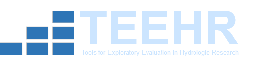
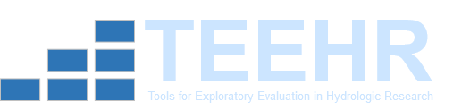

The TEEHR Framework#
Introduction#
TEEHR enables conducting an exploratory evaluation through the concept of an Evaluation. In this context an Evaluation is a class in Python and a directory with a defined set of subdirectories to hold all the relevant data that work together to make up an Evaluation. The Evaluation class provides users with methods to interact with the data that is in the Evaluation directory. These interactions include fetching data from external sources, loading data that you already have, and querying and visualizing data that is in the Evaluation.
Directory Structure#
The TEEHR directory structure contains the following subdirectories:
Cache
Dataset
Scripts
├── cache
│ └── loading
├── dataset
│ ├── attributes
│ ├── configurations
│ ├── joined_timeseries
│ ├── location_attributes
│ ├── location_crosswalks
│ ├── locations
│ ├── primary_timeseries
│ ├── secondary_timeseries
│ ├── units
│ └── variables
└── scripts
Cache#
The cache directory is used internally by TEEHR to save temporary files during processing of fetching and loading methods.
Dataset#
The files and data within the dataset directory make up the TEEHR database. Each subfolder within the dataset directory can be thought of as a database table and contains one or more files that contain the data. All the files within a “table folder” conform to the specified schema and file format for that table. Subfolders within the “table folder” must conform to the hive partitioning specification.
Scripts#
The scripts directory contains processing scripts that are specific to a given evaluation. These are typically data setup and preprocessing scripts, not the evaluation code used to explore the data or calculate metrics.
Schema#
There are 9 tables in the standard TEEHR dataset that users can enter data into and one table (Joined Timeseries) that acts as a materialized view to speed up analytic queries, for a total of 10 tables. They fall into three categories, domain tables, location data tables, and timeseries tables. The domain tables are populated with values automatically and the data is stored in plain text as CSV files so that they are more easily edited by the user. These tables tend to have a relatively small amount of data compared to the timeseries data tables which tend to contain much more data and utilize the Apache Parquet format. This is managed for the user, but is provided here for reference.
{kind=link}
Domain Tables#
Unit - the units table contains the valid measurement units that can be referenced in other tables, such as the Timeseries table.
Variable - the variables table contains the valid variables that can be referenced in other tables, such as the Timeseries table.
Configuration - the configurations table contains the valid configurations that can be referenced in other tables, such as the Timeseries table.
Attribute - the attributes table contains the valid attributes that can be referenced in other tables, such as the Timeseries table.
Note
There are methods in the domain table subclasses to add additional values to the domain tables when setting up a new evaluation if the default values do not meet your needs.
Location Data Tables#
Locations - the locations table stores data associated with the “where”. For example, this could be gage locations, basin boundaries, river reaches, etc.
Location Attributes - the location attributes table stores attribute data per location. This could be any location specific
Location Crosswalks - the location crosswalks table stores crosswalk data between different location types.
Timeseries Tables#
Primary Timeseries - the primary timeseries table stores the primary timeseries data (“observations”) that is used in the evaluation.
Secondary Timeseries - the secondary timeseries table stores the secondary timeseries data (“model simulations”) that is used in the evaluation.
Joined Timeseries - the joined timeseries table is the primary and secondary timeseries joined on primary location ID. This table is a materialized view that is used to speed up analytic queries.
Note
The TEEHR dataset uses the concept of foreign keys where the values in some columns must exist in the column of a a different table, but this is only checked once when data is being inserted and is not enforced beyond that.
Evaluation Class#
The evaluation class methods are the primary way that a user will interact with the evaluation directory and its contents when setting up a new evaluation and exploring the data.
The evaluation class has some top level methods that are used to interact with the top level evaluation. These include methods to, for example, create a new evaluation, clone an existing evaluation, etc.
Then there are subclasses for each table that provide methods to add data to a table or get data out. Similarly, there is a subclass that contains the methods for fetching timeseries data from external sources (i.e., USGS or NWM), and lastly there is a metrics subclass that provides methods for generating metrics.